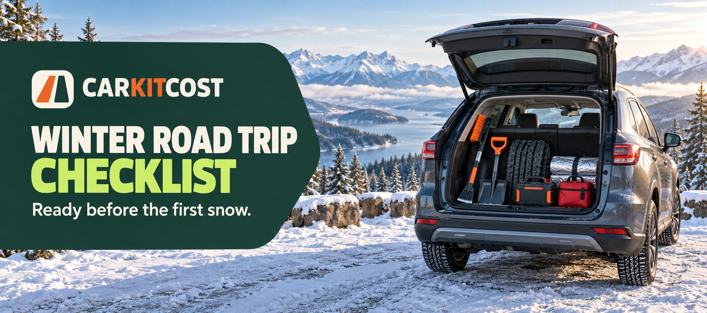

Get your car ready for a winter road trip before the first snow.
Published · Updated
Most winter trouble starts before you leave: worn tires, a weak battery and a half-empty tank. This guide covers the checks that matter, the small kit worth carrying, and what to do if you get stuck.

1. Plan the route and the timing
Winter trouble often starts with a route that looked fine on a dry day. Before you leave:
- Check the weather forecast and road conditions for the whole route, and watch for storms along the way. AAA advises monitoring both before the trip.
- Keep checking while you drive, through the radio or a navigation app.
- Allow more time than usual. Slower, more careful driving makes every leg longer.
- If you must travel during a winter storm, let someone know your travel plans. The National Weather Service recommends this along with carrying a winter survival kit.
- Save your roadside assistance number in your phone, and think about joining a roadside assistance program before you go.
2. Check the car the week before you go
A short inspection catches the problems that cold weather turns into breakdowns.
- Tires: check tread and pressure. Cold air lowers tire pressure by roughly 1 psi for every 10°F drop, so check them cold on the morning you leave. For tread, hold a penny upside down in the groove: if you can see the top of Lincoln's head, the tread is worn and winter traction will be poor.
- Battery: cold weakens batteries, and an older one is the most common reason a car won't start. Most auto parts stores will test it for free.
- Wipers and washer fluid: replace streaking blades and fill the reservoir with fluid rated for freezing temperatures, since plain fluid can ice up on the glass.
- Fuel: keep the tank at least half full so a delay doesn't leave you without heat.
3. Pack for being stuck, not for driving
You will use most of this kit rarely, but it is what separates a cold hour from a dangerous night. Add a warm hat, gloves, a flashlight or headlamp, a first-aid kit, water, snacks, a phone cable and a power bank to the items below. The National Weather Service and AAA both list a first-aid kit in their winter kit advice.
4. Match the kit to the trip
5. Drive for the surface, not the speed limit
Slow down and make every input gradual: smooth steering, gentle braking and light throttle. Leave much more room than usual, because stopping distances on ice can be many times longer than on dry pavement. Skip cruise control on wet, icy or snowy roads, brake before a turn rather than in it, and expect bridges and overpasses to freeze first. Ice also forms more easily in shaded areas. If you hit black ice, steer straight and avoid sudden movements. Clear snow from the roof, hood and lights before you move, so it doesn't slide onto your windshield or onto the car behind you.
6. If you get stuck
Stay with the vehicle. It is easier for rescuers to find, and it protects you from the weather. Turn on the hazard lights and call for help with your exact location. Before running the engine for heat, clear snow from around the exhaust pipe so carbon monoxide can't build up in the cabin, then run it in short stretches with a window cracked slightly.
Frequently asked questions
Do I need snow tires, or are all-season tires enough?
It depends on where you drive. All-season tires are usually fine for occasional light snow on plowed roads. If you regularly drive on snow or ice, or cross mountain passes, dedicated winter tires grip noticeably better in the cold. Some passes also set their own tire or chain rules, so check before you leave.
How full should the gas tank be in winter?
Keep it at least half full. A delay or a closed road can leave you idling for hours, and you want enough fuel to run the heater in short stretches.
Is a jump starter worth carrying in winter?
Usually yes. Cold weather is when marginal batteries fail, and a self-contained jump starter means you don't need another car. Store it inside the cabin and keep it charged, because cold also drains it.
What can I use for traction if I don't have traction mats?
Cat litter, sand, or even a floor mat pushed under the drive wheel can get you moving as a stopgap. Proper traction mats work better and are easier to carry, but a stopgap beats being stuck.
What should I do if my car gets stuck in the snow?
Stay with the vehicle, turn on the hazard lights and call for help with your exact location. Before running the engine for heat, clear snow from around the exhaust pipe so carbon monoxide cannot build up, run the engine in short stretches, and keep a window cracked slightly. The National Weather Service and Ready.gov both advise staying in the car.
Should I tell someone about my winter route?
Yes, if you must travel during a winter storm. The National Weather Service advises letting someone know your travel plans and carrying a winter survival kit, so people know where to look if you do not arrive.
Sources
Safety advice on this page draws on these pages.
- AAA Club Alliance: How Temperature Changes Affect Your Tire Pressure Tire pressure drops about 1 psi for every 10°F drop in temperature.
- AAA (Western and Central New York): Winter road trips: Arrive safely with advice from AAA Check forecasts and road conditions before you go, and what to do on black ice.
- National Weather Service (Marquette, MI): Vehicle Safety Let someone know your travel plans in a winter storm, what a survival kit holds, and staying with the car with the exhaust pipe clear of snow.
- Ready.gov: Winter Weather Build a car emergency kit; if you are trapped in the car, stay inside.
- Centers for Disease Control and Prevention: Carbon Monoxide (CO) Poisoning Basics Burning fuel in a vehicle produces carbon monoxide.
How we choose products and check facts: read our editorial policy. Found a mistake? Tell us or email hello@carkitcost.com.
Build a winter setup for your car
The planner is pre-set to freezing weather. Choose your vehicle, trip length and who is coming.
Related: the cross-country drive guide, the trunk organization guide, the long road trip setup guide and the dog road trip checklist. As an Amazon Associate, CarKitCost may earn from qualifying purchases. Product links are selected for usefulness and trip fit, not placement fees.